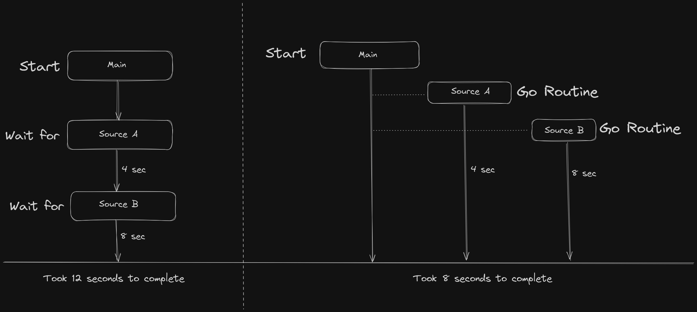

According to the official Go documentation, "A goroutine is a lightweight thread managed by the Go runtime."
In simpler terms, Goroutines are functions that detach themselves from the main function, allowing them to run concurrently and independently of it. To execute any function as a Goroutine, you use the keyword go before calling the function, like this: go foo().
For example, run the code below:
package main
import (
"fmt"
)
func goroutines(){
fmt.Println("I'm a simple Goroutine")
}
func main() {
fmt.Println("I'm the main function")
go goroutines()
}You may notice that the line fmt.Println("I'm a simple Goroutine") inside the Goroutine function never gets executed. Why? As I mentioned earlier, Goroutines detach themselves from the main function. Therefore, when the main function finishes its execution, all Goroutines also stop executing, leading to the program's premature exit.
What are the Waitgroups in Golang?
As the name suggests, WaitGroups in Golang allow us to wait for all our Goroutines to finish their execution before the program completes.
In Golang, the WaitGroup is a part of the standard package and can be imported from the sync package.
Here are the methods provided by WaitGroups:
- Add: The WaitGroup functions as a counter, keeping track of the number of functions or Goroutines to wait for. When the counter reaches 0, the WaitGroup releases the Goroutines.
- Wait: This method blocks the execution of the application until the WaitGroup counter becomes 0.
- Done: It decrements the WaitGroup counter by a value of 1.
Solving our problem with Waitgroups:
package main
import (
"fmt"
"sync"
)
func goroutines(wg *sync.WaitGroup){
defer wg.Done()
fmt.Println("I'm a simple Goroutine")
}
func main() {
var wg sync.WaitGroup
fmt.Println("I'm the main function")
wg.Add(1)
go goroutines(&wg)
wg.Wait()
}What Makes Goroutines a Good Fit for Security Automation?
Goroutines provide significant benefits for building performant and scalable security tools. As lightweight threads of execution, goroutines enable concurrent operations and parallelism without the overhead of operating system threads. This allows security tools written in Go to handle many simultaneous tasks, connections, and requests efficiently.
If you were to develop a tool that retrieves subdomains from two sources, where one source takes approximately 8 seconds and the other takes 4 seconds to fetch subdomains domains, running the tool without utilizing goroutines and waitgroups would result in a total execution time of 12 seconds. However, with goroutines and waitgroups you can complete the task in 8 seconds.
package main
import (
"fmt"
"time"
"sync"
"flag"
)
func extractDomainsFromA(target string, wg *sync.WaitGroup) {
time.Sleep(4 * time.Second)
defer wg.Done()
fmt.Println("Done extracting domains from source A")
}
func extractDomainsFromB(target string, wg *sync.WaitGroup) {
time.Sleep(8 * time.Second)
defer wg.Done()
fmt.Println("Done extracting domains from source B")
}
func main() {
targetName := flag.String("target", "", "Specify the target domain (e.g., india.gov.in)")
flag.Parse()
if *targetName == "" {
fmt.Println("Please provide a target domain using the -target flag.")
return
}
target := *targetName
var wg sync.WaitGroup
wg.Add(2)
go extractDomainsFromA(target, &wg)
go extractDomainsFromB(target, &wg)
wg.Wait()
}
In this approach, the efficiency of the entire code is determined by its slowest component, often referred to as the 'weakest link,' which, in turn, impacts the overall execution time. While we have explored the use of Goroutines and Waitgroups to enable asynchronous execution, you might be curious about how to share data between Goroutines.
As I learn Golang, I'm eager to share my ongoing journey with you. Probably the next blog will be about channels in Golang but it might take a little time.